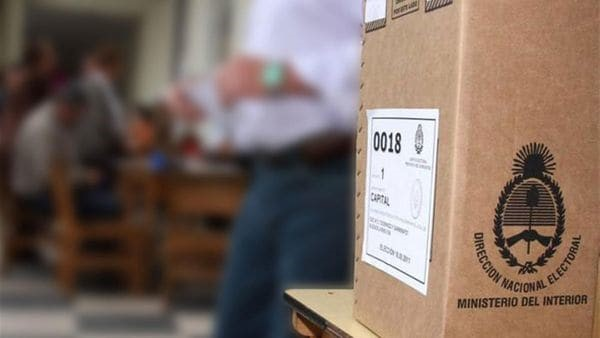

Real Chubut - Agencia de Noticias


Provincia por provincia: cuáles son las alianzas que competirán en las elecciones primarias

La lista de las coaliciones que participarán de las PASO el 13 de agosto.
Este jueves se cerró la inscripción de alianzas electorales para competir en las Primarias Abiertas, Simultáneas y Obligatorias (PASO), que se llevarán a cabo el 13 de agosto. A continuación, la lista de las coaliciones que competirán por las bancas de diputados y senadores nacionales, provincia por provincia.
PROVINCIA DE BUENOS AIRES
Cristina Kirchner y Florencio Randazzo
Cambiemos. Compuesto por el Partido Pro-Puesta Republicana, Partido Coalición Cívica Afirmación para una República Igualitaria (ARI), Partido Unión Cívica Radical (UCR), Partido Demócrata Progresista, Partido Unión Del Centro Democrático (Ucede) y el Partido Unión por la Libertad. También el Partido Espacio Abierto para el Desarrollo y la Integración Social, Partido Fe, Partido Demócrata, Partido Conservador Popular, Movimiento Social por la República y Partido del Diálogo.
Frente Justicialista. Con el PJ, Lealtad y Dignidad, el Partido Verde, Nueva Unión Ciudadana, Integración Federal y el Partido Hacer por el Progreso Social.
Frente de Izquierda y de los Trabajadores. compuesta por el PO, el PTS e Izquierda al Socialismo; Vamos, integrada por las fuerzas Marea Popular Luján y Patria Grande.
Unión por la Justicia Social. Formada por la agrupación vecinal platense Propuesta Federal y por Unión Celeste y Blanco.
Unidad Ciudadana. Es el nuevo frente liderado por la ex presidenta Cristina Kirchner. Participan el Frente Grande, el Partido de la Victoria, Compromiso Federal, Partido Kolina y el Partido Encuentro por la Democracia y la Equidad (EDE).
Encuentro Popular por Tierra, Techo y Trabajo. Es la alianza del partido Miles, de Luis D'Elía, y el partido Comunista.
1País. que lideran Sergio Massa y Margarita Stolbizer, agrupa al Frente Renovador, Nuevos Buenos Aires, Partido Tercera Posiciòn y Polìtica Abierta para la Integridad Social (PAIS).
Alianza Frente Social y Popular. Conformada por el Partido Socialista y el Frente Popular.
Frente Unión Federal. Integrada por el Partido Popular y el de Dignidad Popular.
Alianza Creo. Del partido Renovador Federal y el Movimiento Político Social y Cultural Proyecto Sur.
Izquierda al Frente por el Socialismo.Conformada por el Movimiento Avanzada Socialista y Nueva Izquierda.
Frente Patriota Bandera Vecinal. Integrada por Gente en Acción y Bandera Vecinal.
CIUDAD DE BUENOS AIRES
Horacio Rodríguez Larreta, Elisa Carrió y Mauricio Macri (Prensa Cambiemos)
Vamos Juntos. integrado por el Pro, la Coalición Cívica de la diputada Elisa Carrió y otros espacios como Confianza Pública de la legisladora Graciela Ocaña y Unión por la Libertad, de la ministra de Seguridad, Patricia Bullrich.
Evolución Ciudadana. Competirá Martín Lousteau e incluirá a la Unión Cívica Radical y al Partido Socialista.
Unidad Porteña. Del kirchnerismo y el partido Justicialista porteño, junto a otros 15 partidos.
Izquierda al frente por el socialismo. Integrado por el Movimiento Socialista de los Trabajadores y el Movimiento Avanzado Socialista.
Todos los dirigentes que forman parte del nuevo frente electoral llamado “Unidad Porteña”
Frente de Izquierda y de los Trabajadores (FIT). Integrado por la Izquierda por una Acción Socialista, el Partido Obrero y el espacio denominado Trabajadores por el Socialismo.
1País. Conformado por el Frente Renovador, el GEN y Libres del Sur.
Convocatoria Abierta por Buenos Aires (CAxBA), alianza integrada por Unidad Popular de Claudio Lozano y el partido Izquierda Popular de Rafael Klejzer.
NEUQUÉN
Frente de Izquierda de los Trabajadores. Formado por el Partido Obrero, PTS e Izquierda Socialista.
Izquierda al Frente por el Socialismo. Participan el Movimieno Socialista de los Trabajadores (MST) y Nuevo Mas.
Cambiemos. Formado por el PRO, la UCR y Nuevo Compromiso Neuquino;
Frente Unidad Ciudadana del PJ, Frente Grande, Partido Solidario y Kolina;
Frente Neuquino, con los partidos Unión de los Neuquinos, Frente y la Participación Neuquina, Partido Socialista, PTP y Nuevo Encuentro;
Frente Renovador, integrado por los partidos Unión y Unidad Popular.
TIERRA DEL FUEGO
Frente de Unión. Formado por dos alianzas. La del Partido Intransigente y Encuentro Popular, y otra integrada por el Partido Justicialista y el frente Hacer por el Progreso Social.
Frente Ciudadano y Social. Congregó a todo el espectro del "kirchnerismo puro" con el agregado del Partido Social Patagónico (PSP) que conduce la ex gobernadora Fabiana Ríos. En ese espacio confluyen el Partido de la Victoria, el Partido Humanista, el Partido Encuentro por la Democracia y la Equidad (ex Nuevo Encuentro) y Concertación Forja.
Cambiemos TDF. Constituido entre la UCR provincial y el PRO.
UnirTDF. Incluye al Frente Renovador Auténtico y al partido Generación para un Encuentro Nacional (GEN).
LA PAMPA
Propuesta Frepam-Cambiemos. Formado por la Unión Cívica Radical (UCR), Propuesta Republicana (PRO), Movimiento Federalista Pampeano (Mofepa), Movimiento de Integración y Desarrollo (MID) y el partido Fe.
Frente Progresista Pampeano. Formado por el GEN y el Partido Socialista, que rompió la histórica alianza que tenía con la UCR en La Pampa por su acercamiento al PRO.
El Movimiento al Socialismo (MAS) y el Movimiento Socialista de los Trabajadores (MST) inscribieron la alianza Izquierda al Frente por el Socialismo.
SALTA
Frente Popular para la Liberación. integrado por los partidos Instrumento Electoral por la Unidad Popular y Kolina
Frente de Izquierda y de los Trabajadores. Constituido por el Partido Obrero y el Partido de los Trabajadores por el Socialismo.
Frente Unidad y Renovación. Compuesto por el Partido Justicialista, el Partido Renovador de Salta, el Frente Salteño, Memoria y Movilización Social, el Frente Plural, el Partido del Trabajo y la Equidad; la Unión Victoria Popular; y Familia, Educación, Libertad, Igualdad, Cultura, Independencia, Democracia, Ambiente y Desarrollo (Felicidad).
La alianza Cambiemos País nuclea al PRO-Pro
puesta Republicana; Propuesta Salteña; el Partido Conservador Popular; Primero Salta; el Partido Identidad Salteña; el Partido de la Educación y el Trabajo; Salta Nos Une; el Partido Fe; y la Unión Cívica Radical.
Frente Ciudadano para la Victoria. Conformado por el Partido de la Victoria, el partido Frente Grande y del Movimiento Popular Unido.
MENDOZA
Cambiemos. Conformado por la UCR, el Pro, el partido Demócrata y la CC- ARI.
Somos Mendoza. Integrado por el Partido Justicialista y los partidos que conformaban el FpV.
El Frente de Izquierda y de los Trabajadores (FIT)
Primero Mendoza. Conformado por Partido Socialista, Frente Renovador y Libres del Sur.
Encuentro por Mendoza. Compuesto por Partido Federal y Encuentro Federal.
JUJUY
Frente Jujeño Cambiemos. Conformado por la UCR, PRO Cambio jujeño, Lider, Partido Socialista y Cruzada Renovadora.
Frente Justicialista. Partido Justicialista, Proyecto Sur, Kolina, Partido Solidario, Arriba Jujuy y Nuevo Encuentro.
Frente de Izquierda de los Trabajadores (FIT). Integrado por el Partido de los Trabajadores Socialistas -PTS y el Partido de Obrero.
Frente Renovador 1 País. Aglutina a diez partidos políticos: Partido Blanco de los Trabajadores, Gana Jujuy, Renovador Federal, Movimiento Popular Jujeño, Movimiento Norte Grande, Demócrata Cristiano, Concertación Forja, Instrumento Electoral por la Unidad Popular, Encuentro Jujeño y Primero Jujuy.
Frente Ciudadano para la Victoria.Conformado por los partidos Encuentro por la Democracia y la Equidad y por el Movimiento de Integración Latinoamericana de Expresión Social – Miles.
LA RIOJA
Frente Justicialista Riojano. Integrado por el Partido Justicialista, el Frente del Pueblo, Compromiso Federal, Lealtad y Unidad, y el MAV (Movimiento de Acción Vecinal).
Cambiemos. Integrada por Fuerza Cívica Riojana, que conforman la UCR provincial, el ARI y otros partidos, y el PRO.
Una Rioja. Frente Renovador, partido Nacionalista Constitucional y Tercera Posición.
Izquierda Alternativa Popular Riojana. Integrada por el Partido Comunista y Kolina.
Izquierda al Frente por el Socialismo.Componen la Nueva Izquierda y el Movimiento al Socialismo.
CATAMARCA
Frente Unidad Ciudadana. Responde al Frente para la Victoria, integrado por las agrupaciones políticas Unión Celeste y Blanca y Dignidad Popular.
Frente Justicialista para la Victoria. Integrado por los partidos Justicialista, Kolina, Solidario, Frente Grande, Intransigente, Martín Fierro, y Jubilados, como los provinciales 26 de Julio; Cambyar, Partido de Unidad Catamarqueña y Acción Vecinal.
Frente Cívico y Social-Cambiemos. Integrado por la Unión Cívica Radical, PRO, FE, Coalición Cívica-ARI, Socialista y los provinciales Movilización y Nuevo Espacio de Opinión.
Juntos Somos Catamarca. Integrada por los partidos nacionales Tercera Posición y Unión Populista, los provinciales Unión Federal; y Participación Plural y los departamentales Unidos por Capayán; y Todos Somos Mutquín
SANTA CRUZ
Frente de Izquierda y de los Trabajadores.Integrado por el Partido Obrero y Nueva Izquierda.
Frente para la Victoria. Sin precisar qué partidos podrían integrarlo en estas elecciones.
Frente Izquierda al Frente por el Socialismo.Integrada por el Movimiento Socialista de los Trabajadores (MST) y el Nuevo MAS.
Frente Unión para Vivir Mejor (UPVM)-Cambiemos. Participan la UCR, Encuentro Ciudadano, PRO, Coalición Cívica-Ari-, Socialismo y partidos provinciales.
CORRIENTES
Encuentro por Corrientes (ECO)+Cambiemos. Será integrada por 15 partidos tanto nacionales como provinciales: el PRO, la Unión Cívica Radical, Unión Celeste y Blanco, Coalición Cívica-ARI, Proyecto Corrientes, Partido Socialista, ELI-Encuentro en Libertad, Acción por Corrientes, Unión Popular, Conservador Popular, Demócrata Progresista, Partido Federal, Acción por la República, FE, Unión para el Desarrollo y Encuentro Correligionario.
Partido Justicialista. Conformó el frente Juntos Podemos Más, que incluirá también a los partidos: De la Victoria, Demócrata Cristiano, Kolina, Proyecto Popular, Crecer con Todos, Concertación Forja y Unión de Centro Democrático. Cuenta además como adherentes a organizaciones sociales, políticas y gremiales como: Nuevo Encuentro, La Cámpora, Movimiento Evita, Los Irrompibles, Unidos y Organizados y sindicatos, entre otros, según informó oficialmente el Partido.
Frente Renovador 1País. Con el Partido Renovador; el Movimiento Libres del Sur y el Partido de la Cultura, la Educación y el Trabajo, con adhesión de Cambio Popular (CaPo).
Frente para la Victoria, Frente Ciudadano o Frente Ciudadano para la Victoria. Integrado por Kolina y Encuentro por la Democracia y la Equidad.
CÓRDOBA
Cambiemos. Compuesto por el PRO, la Unión Cívica Radical (UCR), Frente Cívico, Coalición Cívica ARI y UCEDE.
Unión por Córdoba (UpC). Lidera el ex gobernador José Manuel De la Sota, lo integran el Partido Justicialista, Movimiento Integración y Desarrollo, Partido Demócrata Cristiano, Unite por la Libertad y la Dignidad, Unión Vecinal Federal, Movimiento de Acción Vecinal, Vecinalismo Independiente, Unión Popular, Unión Celeste y Blanco, Partido Demócrata, Partido Liberal Republicano y Partido Fe.
Frente Córdoba Ciudadana (ex Frente para la Victoria). Está compuesto por el Partido de la Victoria, Frente Grande, Encuentro por la Democracia y la Equidad, Partido Comunista, Partido Solidario, Compromiso Federal y Partido Kolina.
La Alianza Somos (ex Frente Progresista). Integran el Partido Trabajo y Pueblo, Partido Socialista, Partido Intransigente y Movimiento Libres del Sur.
Frente de Izquierda y los Trabajadores. Participan el Partido Obrero, Izquierda Socialista y Partido de los Trabajadores Socialistas.
Izquierda al Frente por el Socialismo.Integrada por el Movimiento Socialista de los Trabajadores (MST), Nueva Izquierda y Movimiento de Avanzada Socialista.
TUCUMÁN
Frente Justicialista por Tucumán (FJT). Es liderado por el Partido Justicialista local y estará conformado además por Pueblo Unido, Frente Grande, Kolina, Acuerdo Federal, De la Victoria, Solidario, del Trabajo y la Equidad y el Frente Renovador Auténtico.
Cambiemos para el Bicentenario. Confluirán la UCR, el PRO, la Democracia Cristiana, el Movimiento Libres del Sur y el Partido por la Justicia Social.
También fue oficializado el Frente Amplio Tucumano (FAT), que conforman el Partido del Trabajo y del Pueblo y Unión y Progreso Social.
Frente de Izquierda de Tucumán. Está conformado por el Partido Obrero (PO) y el Partido de Trabajadores Socialistas (PTS).
CHUBUT
Chubut Para Todos. Formado por cuatro partidos que se conformaron alrededor del gobernador Mario Das Neves sumando a su partido provincial "Chubut somos Todos" el "Polo Social", el "Partido de la Cultura, la Educación y el Trabajo" y el "Partido Acción Chubutense".
Frente para la Victoria. Constituido por el Partido Justicialista y el Partido Independiente Chubutense.
Cambiemos. Integran la Unión Cívica Radical y Propuesta Republicana (PRO).
ENTRE RÍOS
Frente Justicialista Somos Entre Ríos. Aglutinará al Frente Entrerriano Federal para el Trabajo, la Producción y la Justicia Social, el Frente Grande, el Movimiento por Todos, el partido de la Cultura, la Educación y el Trabajo, y el partido Compromiso Federal.
Cambiemos. Integrado por seis fuerzas entre las que se cuentan el radicalismo, el PRO, el GEN, el FE de Gerónimo "Momo" Venegas, el Movimiento Social Entrerriano y Unión por la Libertad.
El socialismo optó por otra fórmula que se formalizará el 24, cuando opere el plazo para la inscripción de las listas, y donde se presentará para reunir, en un tercer frente, al Partido del Trabajo y el Pueblo (PTP), a la Corriente Clasista y Combativa, a Unidad Popular (el partido que a nivel nacional fundó Víctor De Gennaro) y expresiones del massismo de Paraná. Así lo decidieron ya que de esas expresiones políticas, el socialismo es el único que contaba con personería de distrito nacional, paraguas que luego va a contener al resto de los partidos.
TUCUMÁN
Frente Justicialista por Tucumán (FJT). Es liderado por el Partido Justicialista local y estará conformado además por Pueblo Unido, Frente Grande, Kolina, Acuerdo Federal, De la Victoria, Solidario, del Trabajo y la Equidad y el Frente Renovador Auténtico.
Cambiemos para el Bicentenario. Confluirán la UCR, el PRO, la Democracia Cristiana, el Movimiento Libres del Sur y el Partido por la Justicia Social.
Frente Amplio Tucumano (FAT). Conformado por el Partido del Trabajo y el Pueblo y Unión y Progreso Social.
Frente de Izquierda de Tucumán. Conformado por el Partido Obrero (PO) y el Partido de Trabajadores Socialistas (PTS).
MISIONES
Frente Renovador de la Concordia Social.Integrado por el Partido de la Concordia Social, Partido Justicialista, Causa Popular, Participación Ciudadana, Frente de Unidad Militante (FUM), Memoria y Movilización Social (MEMOS) y el partido Proyecto Popular.
Frente Avancemos. Adhiere al Frente 1 País de Sergio Massa. Integrado por el Partido por la Educación, la Cultura y el Trabajo, el Partido Socialista y Hacer por el Progreso Social.
Frente Cambiemos. Integrado por la Unión Cívica Radical, Libertad Valores y Cambio y el PRO del presidente Mauricio Macri.
En tanto la sorpresa, al filo del cierre del plazo para inscripciones, la dio el kirchnerismo que inscribió el Frente Unidad Ciudadana, integrado por los seguidores de la ex presidente Cristina Kirchner, La Cámpora, Kolina y algunos disidentes del peronismo provincial.
Partido Obrero, Nuevo Octubre, Instrumento por la Unidad Popular, Partido Agrario y Social (PAYS) y Unión Popular, presidido por el ex gobernador y actual embajador en España, Ramón Puerta, se inscribieron individualmente.
SAN LUIS
Frente Avanzar y Cambiemos por San Luis. Está integrado por los partidos Avanzar, UCR, PRO, Partido Demócrata Independiente y Movimiento Libres del Sur.
Frente Unidad Justicialista. Lo forman el Partido Justicialista de San Luis, Compromiso Federal, PUL (Partido Unión y Libertad), MID (Movimiento de Integración y Desarrollo), Frente para la Victoria, Partido Comunista, Más San Luis,el Partido del Trabajo y la Equidad y Vocación Sanluiseña.
La Izquierda al Frente por el Socialismo está integrada por el MAS (Movimiento al Socialismo) y el Movimiento Socialista de los Trabajadores.
SANTIAGO DEL ESTERO
Frente Cívico por Santiago. Liderado el senador nacional Gerardo Zamora. Conformó su alianza con el Partido Justicialista, Partido Federal, Kolina, Movimiento Justicia y Libertad; Partido Justicialista, Una Nueva Alternativa, Acción Vecinal, Partido de la Victoria y Partido Social del Centro.
Cambiemos. UCR, PRO y Coalición Cívica.
Frente Renovador 1Pais. Conformó una alianza política con Libres del Sur y agrupaciones vecinales.
Cruzada Santiagueña. Es un desprendimiento del PJ santiagueño, competirá con un frente integrado con Unión por la Libertad y Partido Popular.
Izquierda Socialista hacia el Frente de Izquierda.
CHACO
Frente Chaco Merece Más. Formado por el Partido Justicialista Concertación Forja, Nuevo Espacio de Participación, Corriente Martín Fierro, Movimiento de Bases, Frente para el Cambio, Partido Intransigente y otros partidos y movimientos.
Cambiemos. Constituida por los partidos Unión Cívica Radical, Propuesta Republicana (PRO), Argentina por una República de Iguales (ARI), FE y Bases y Principios.
Frente Unidad Ciudadana. Está compuesto por el Frente Grande y el Partido Proyecto Popular
Un Nuevo País. Integrada por los partidos Socialista, Libres del Sur y Frente Renovador.
SAN JUAN
Cambiemos por San Juan. Partidos Actuar, Cruzada Renovadora, PRO, UCR, Producción y Trabajo, Dignidad Ciudadana, Partido Fe, con las adhesiones del partido municipal Forja, y las agrupaciones de dirigentes independientes del Grupo 1852 y del Bloquismo disidente.
Frente Todos. Integrado por el Partido Justicialista, el Partido Bloquista como principal aliado, y los partidos Conservador Popular, Unidad y Progreso, Compromiso Social, Kolina, Frente Grande y el partido de la Cultura, la Educación y el Trabajo del sector de Camioneros.
Alianza 1 Pais-Somos San Juan. Compuesto por los partidos Convicción Federal, el Movimiento de integración y Desarrollo (MID) y el GEN.
Finalmente el Frente Progresista Popular, conformado por el Partido Socialista y el Partido del Trabajo y del Pueblo.
RÍO NEGRO
Frente para la Victoria. Estará integrado por los Partidos Justicialista, Kolina y Frente Grande, además de cinco partidos adherentes, Nuevo Encuentro, Movimiento de Apertura Democrática, el Movimiento Nacional Alfonsinista (FORJA), Partido Comunista, y el partido Solidario.
Juntos Somos Río Negro. Integrado por el Movimiento Popular Patagónico (MPP) y el Partido Fé.
Cambiemos. Unión Cívica Radical y el Pro.
Nuevo MAS, Movimiento al Socialismo. Se presentará en una alianza que integra con el Movimiento Socialista de los Trabajadores (MST), inscripto como Izquierda al Frente por el Socialismo.
SANTA FE
Coalición Cambiemos. PRO, la UCR y la Coalición Cívica-ARI.
Frente Justicialista. Contendrá las diferentes vertientes del peronismo y en cuyo seno se descuenta la participación de una lista cercana al senador Omar Perotti y una que representará al kirchnerismo, encabezada por el parlamentario del Mercosur, Agustín Rossi. Componen el frente el PJ y aliados tradicionales como el Partido Intransigente, el Frente Grande, el Partido Solidario, Encuentro por la Democracia y Equidad, Partido del Progreso Social, Confluencia Santafesina, Producción, Trabajo y Desarrollo, y Kolina.
Frente Progresista Cívico y Social (FPCS).Integrado por el Partido Socialista, el Partido Demócrata Progresista, el GEN, Movimiento Libres del Sur y Partido Pares, más un sector de la UCR.
Frente Renovador. Competirá en el distrito con el frente 1 Proyecto Santafesino, que además contiene al Movimiento Integración y Desarrollo (MID) y al Partido Demócrata Cristiano.
Frente Social y Popular (FSP). Agrupa al Partido Socialista Auténtico, Nueva Izquierda y al Partido del Trabajo y el Pueblo, y que a nivel nacional suma a Patria Grande y a Unidad Popular.
Frente de Izquierda y los Trabajadores (FIT). Formó parte también este distrito del acuerdo al que arribaron a nivel nacional la Izquierda Socialista, el Partido Obrero y el Partido de los Trabajadores Socialistas.
FORMOSA
Frente para la Victoria. PJ y otros 13 partidos.
Frente Amplio Formoseño Cambiemos. UCR, el PRO, el Movimiento de Integración y Desarrollo, el Partido Acción Nativa, Autonomista y el partido Fe.